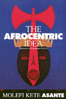

<body bgcolor="#FFFFFF" text="#000000" link="#0000FF" vlink="#CC0000" alink="#CC0000"><center><hr width="350" size="1" align="center" noshade>Asante's spirited engagement with culture warriors, neocons, and postmodernists updates this classic<hr width="350" size="1" align="center" noshade><p><a href="https://cdcshoppingcart.uchicago.edu/Cart/ChicagoBook.aspx?ISBN=9781566395946&&PRESS=temple" target="_top">Buy this book!</a> | <a href="https://cdcshoppingcart.uchicago.edu/Cart/Cart.aspx?PRESS=temple" target="_top">View Cart</a> | <a href="https://cdcshoppingcart.uchicago.edu/Cart/Cart.aspx?PRESS=temple" target="_top">Check Out</a></p><p></p></center><!--none//--><h1>The Afrocentric Idea</h1>
<H2>Revised and Expanded Edition</H2>
<h3>Molefi Kete Asante</h3>
<P>cloth 1-56639-594-1 $61.50, Dec 97, <FONT COLOR=#990033>Out of Stock Unavailable</FONT>
<br>paper 1-56639-595-X $27.95, Dec 97, <FONT COLOR=#990033>Available</FONT>
<br>Electronic Book 1-43990-562-2 $27.95 <FONT COLOR=#990033>Out of Stock Unavailable</FONT>
<BR> 256 pp
5.5x8.2
</P><BLOCKQUOTE><I>"Asante's wide range of references, his delightful examples taken from black traditions, and his sheer pleasure at discussing black culture, all combine to make his
argument both cogent and important. This will be a major book."</I>
<BR>&#151<B>Henry Louis Gates, Jr.</B>, Chair, Afro-American Studies Department, Harvard University, and W.E.B. Du Bois Professor of the Humanities<I></I></BLOCKQUOTE>
<p>This new edition of <i>The Afrocentric Idea</i> boldly confronts the contemporary challenges that have been launched against Molefi Kete Asante's philosophical, social, and cultural theory. By rendering a critique of some postmodern positions as well as the old structured Eurocentric orientations discussed in the first edition, this new edition contains lively engagements with views expressed by Mary Lefkowitz, Paul Gilroy, and Cornel West. Expanding on his core ideas, Asante has cast <i>The Afrocentric Idea</i> in the tradition of provocative critiques of the established social order. This is a fresh and dynamic location of culture within the context of social change.
<BR>&nbsp;<h2>Excerpt</h2><P>Excerpt available at <a href="http://www.temple.edu/tempress">www.temple.edu/tempress</a></p>
<BR>&nbsp;<h2>Reviews</h2>
<p><I>"Commencing with a spirited criticism of traditional Western academic discourse, Asante's drama concludes with a discussion of a transformative African and African-American discourse that puts its participants in possession of the dynamic spirits of a distinctive African cultural experience." <br>&#151<b>Chronicle of Higher Education</i></b>
<p><I>"Mr. Asante is widely regarded as a major proponent of 'Afrocentricity,' or the understanding of the black experience as an extension of African history and culture.... He is credited with doing as much as anyone to build a theoretical base for an idea that has been around for sometime."</I> <br>&#151<b><I>Quarterly Journal of Speech</I></b>
<p><I>"Not the least purpose of </i>The Afrocentric Idea<i> is to show blacks they have an African heritage and history that have persisted through, and helped blacks to survive slavery and subsequent discrimination."</I>
<br>&#151<b><I>The New York Review of Books</i></b>
<BR>&nbsp;<h2>Contents</h2><P>
<p>Preface
<br>Acknowledgments
<br>1. Dancing between Circles and Lines
<p><B>Part I: The Situation</B>
<br>2. Rhetorical Condition as a Conceptual Field
<br>3. The Idea of a Metatheory
<br>4. African Foundations of <I>Nommo</I>
<p><B>Part II: The Resistance</B>
<br>5. African American Orature and Context
<br>6. Mythoforms in African-American Communication
<br>7. Rhetoric of Resistance
<br>8. Choosing Freedom
<br>9. Africa as Concept
<p><B>Part III: The Liberation</B>
<br>10. The Search for an Afrocentric Method
<br>11. Transcendence: The Curved Line
<p>Notes
<br>Index
</P><BR>&nbsp;<H2>About the Author(s)</H2>
<table><tr><td valign="top"><img src="/tempress/authors/500_au.gif" height="90" width="75"></td><td width="100%" valign="middle"><p><B>Molefi Kete Asante</B> is Professor and chair of African-American Studies at Temple University, and author of several books, including <I><A HREF="932_reg.html" TARGET="_top">African Intellectual Heritage</A></I> (with Abu S. Abarry, Temple) and <i>The Historical and Cultural Atlas of African Americans</i>.</P></td></tr></table>
<BR><H2>Subject Categories</H2>
<p><A HREF="/tempress/african.html" TARGET="_top">African American Studies</a>
<BR><A HREF="/tempress/african_studies.html" TARGET="_top">African Studies</a>
</p>
<p align="center"><a href="https://cdcshoppingcart.uchicago.edu/Cart/ChicagoBook.aspx?ISBN=9781566395946&&PRESS=temple" target="_top">Buy this book!</a> | <a href="https://cdcshoppingcart.uchicago.edu/Cart/Cart.aspx?PRESS=temple" target="_top">View Cart</a> | <a href="https://cdcshoppingcart.uchicago.edu/Cart/Cart.aspx?PRESS=temple" target="_top">Check Out</a></p><p><font face="Arial" size="1"><a href="copyright.html" onMouseOver="window.status='Web Copyright Policy';return true;" onMouseOut="window.status=''" title="Web Copyright Policy">&copy;</a> 2015 <a href="http://www.temple.edu" target="new" onMouseOver="window.status='Link to Temple University home page';return true;" onMouseOut="window.status=''" title="Link to Temple University home page">Temple University</a>. All Rights Reserved. http://www.temple.edu/tempress/titles/500_reg.html</font></p>